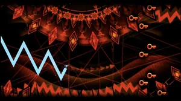

"LIMBO" by MindCap

LIMBO is a 2.1 Extreme Demon mega-collaboration hosted and published by MindCap, co-hosted by Djoxy and verified by BGram on 26 November 2022 after 109,490 attempts.[1] The level is designed in a 1.9 style with a mix of indigo, dark blue and red, similar to the last 25% of weoweoteo's Extreme Demon Marathon but more detailed. The theme is also similar to both Hinds' and Vlacc's parts in Cybernetic Crescent. It is made to be the hardest memory Demon without relying on visual interference while implementing unique gameplay mechanics.
Facts about LIMBO
- The level contains 392,425 objects.
- The level is 3m 27s in length.
- LIMBO became the hardest level currently beaten on 144Hz, following LuigiDB's completion on 5 April 2023.
- The level was nominated for and achieved Best Demon Megacollab in the Geometry Dash 2022 Awards.
- Failing to obtain any key in MindCap's part will kill the player. If Auto-Retry is disabled, a flashing screen with the words 'PICK THE KEY COWARD' and 'DON'T LET IT WIN' can be seen. The message is implied to be directed to the player character, the reincarnated version of the scientist (coward) from the manager killed by EAM-17 (it). The Easter egg was revealed by MindCap on 8 January 2023.
Go back to homepage